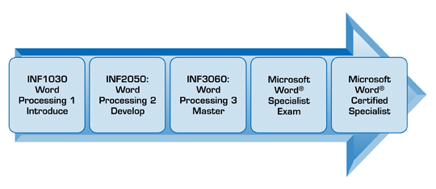
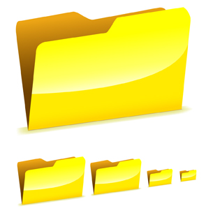

Orientation
© Monkey Business Images/shutterstock
Introduction
In INF1030: Word Processing 1 you developed your skills and became comfortable using word-processing software. Now it’s time to start taking your skills beyond the basics and use even more of your software’s features. It’s also time to examine opportunities, challenges, and resources as you identify possible life roles and career pathways in business, administration, or finance and information technology.
INF2050: Word Processing 2 is an intermediate-level Information Processing course that will expand your word-processing and document production skills. You will create, format, edit, and produce commonly used documents—such as letters, reports, tables, and newsletters—for personal and business use. As you work through the course, you will also learn how to establish proper routines and practices to promote safety and security, as well as practise basic competencies (employability skills) to help you achieve success.
When you complete INF2050: Word Processing 2, you will have learned transferable skills that could set you apart from other students, other job applicants, and even other employees. Consider the value of using higher-level word-processing skills to complete your school assignments now, and the value of transferring these skills to the post-secondary environment or to any career you may choose. People with skills save time and stand out. Are you one of those people?
INF2050: Word Processing 2 builds your skills towards obtaining Microsoft Office Certification, and is a prerequisite course to INF3060: Word Processing 3. Students continuing on the path towards Microsoft Office Certification should also complete INF3060: Word Processing 3.

There is no prerequisite course for INF2050; however, INF1030: Word Processing 1 is a recommended supporting course and students must have a solid foundation in basic word-processing skills before beginning INF2050. This course is designed using Microsoft Office Word 2007 on a PC, but activities can be completed using previous versions of Microsoft Word or other available word-processing programs.
You are encouraged to use keyword searches in Help menus and online references to find software-specific demonstrations and tips to assist you in completing the learning activities. Microsoft Office Online is a rich source of help, training, demos, and quizzes that will help you learn Microsoft programs. Remember that your teacher is also there to guide and assist you.
As you work through the training rooms, you will learn how to perform the following tasks:
Create and customize documents. Advance your word-processing software skills to create more sophisticated documents, such as cover letters, research papers, brochures, advertisements, customized calendars, and magazine articles.
Format content. Lay out your documents professionally and efficiently.
Work with visual content. Create and manipulate graphics for eye-catching results.
Organize content. Use software features to create more complex documents faster and make them easier to navigate.
Review documents. Collaborate on document editing.
Share and secure content. Get documents ready for publication.
Apply consistent and appropriate workstation routines. Create a safe and secure work environment.
Demonstrate basic competencies. Learn and practice employability skills.
Identify roles and career pathways related to Business and Information Technology. Explore ways to apply the skills you develop in this course to other areas of your life (opportunities, resources, challenges).
Upon finishing the training for this course, you will be ready to complete your final project, a workplace simulation. When you have successfully completed all of the course requirements, including the final project and your skills assessments, you will earn one credit towards your high school diploma.
Industry Skills—Microsoft Certification
Microsoft Corporation is recognized worldwide as the industry leader in desktop productivity and IT software. Acquiring Microsoft credentials distinguishes your skills in the job market, giving you a distinct advantage over the competition. Microsoft certification ensures that you have the technical skills and the practical work experience necessary to confidently and successfully handle the demands of a busy workplace. Your personal investment in the certification process will be recognized by your peers, your customers, and your employers as a demonstration of your commitment to advancing your skills and to life-long learning.
An IDC study shows that 75% of all administrative employees are required to have either moderate or advanced Microsoft Office skills — make sure that you are qualified for your next job.
Cushing Anderson, ”Preventing Bad Hires: The Value of Objective Prehire Assessment”, (IDC, January 2007). http://download.microsoft.com/download/f/2/b/f2bde3bb-c982-4c5a-ae41-9300b6b8d413/Preventing_bad_hires.pdf (14 December 2009).
You are encouraged to visit the Microsoft Web site and investigate Microsoft Office certification possibilities.
Course Folder

© tastemeru/shutterstock
While working through this course, it is important to save all of your work as evidence of your learning. Check with your teacher for information regarding where to create a course folder in which to save your assignments.
Create a new folder called INF2050: WP2.
In the INF2050: WP2 folder, create the following subfolders:
- Intro
- Letters
- Graphics
- Reports
- Tables
- Reviewing
- Final Project
Icon Legend
This icon alerts you to project work that will be submitted for assessment.
This icon signifies that a scoring rubric is accessible to you to see how you may be scored on a particular assessment piece.
This icon signifies that you are linking to an external document.
This icon alerts you to a guided search you will need to perform.
This icon shows you that an important tip or hint has been provided.
This icon shows you that the activity or exercise goes beyond the scope of INF2050. These activities are meant to challenge your knowledge and skills and are not meant for assessment.
Toolkit
Have a question? Need some help? Check out the Toolkit! The Toolkit is an excellent place to look when you need to see an example, look up an unfamiliar word, or learn software tips and tricks.
Project Descriptions
In order to become skilled in all of the learning outcomes for INF2050: Word Processing 2, there are four projects to complete:
- Project 1—Workstation Management
Learn about health, safety, and security when working on a computer and apply appropriate positions and routines consistently.
- Project 2—Basic Competencies
Demonstrate workplace employability skills.
- Project 3—Document Production
Develop skills as you work through six training rooms, learning and practising word-processing software commands and functions to create and customize documents for personal use.
- Project 4—Final Project
Demonstrate the skills you have acquired in order to produce documents for your final evaluation.
Project Skill Level
Expert/Master |
Proficient |
Competent |
Limited |
No Evidence |
To obtain credit from Alberta Education, you must demonstrate all learning outcomes and achieve a course grade of 50%.

© maxstockphoto/shutterstock
Environmental Impact
Stop before you print!
Can you think of ways of recycling to reduce computer waste?
- paper reduction and recycling
- toner cartridge recycling
- computer equipment recycling
Save power by turning off your hardware when you are finished for the day.